Solstickan brasstickor
vad
Uppdatering av förpackning
när
2025-2026
målgrupp
Brasälskare, grillmästare och friluftsmänniskor med behov av en smidig produkt för att tända eldar
Brasstickan är en produkt som är en form av hybrid mellan en tändkub och en tändsticka. Den tänds genom att strykas mot askens plån, precis som en vanlig tändsticka, och brinner sedan i flera minuter, precis som en tändkub. En smidig produkt med stor potential med andra ord, men trots det har den hamnat i skymundan på marknaden.
I slutet av 2025 involverades jag i en arbetsgrupp med målet att uppdatera förpackningen för Solstickans brasstickor, i syfte att öka försäljningen av varan. Som enda formgivare i gruppen skissade jag fram några olika koncept, och i samråd med de andra (som jobbar med sälj och logistik) spikade vi så småningom en ny design för asken och även en tillhörande skeppningskartong.
En notering angående designen av förpackningen: jag har valt att genomgående använda en fet variant av typsnittet Optima där det används, vilket inte är optimalt sett till den visuella hierarkin, men för ett typsnitt med hög kontrast mot en mörk bakgrund som dessutom trycks i liten storlek med offset så förbättrar det läsbarheten avsevärt. Funktion före form, helt enkelt.
Nedan syns den färdiga asken och den tillhörande skeppningskartongen, originalasken, samt några skisser från arbetets gång.
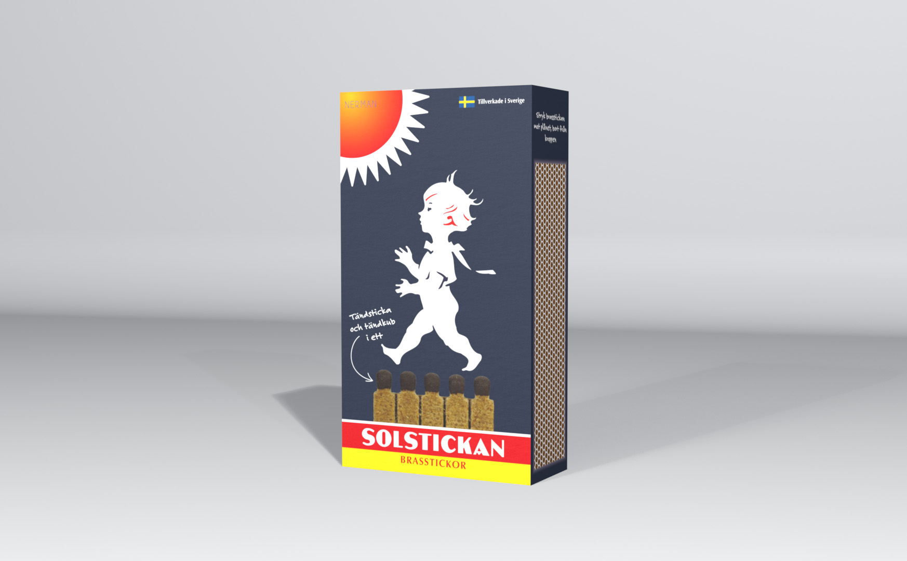
3D-rendering av den färdiga asken.
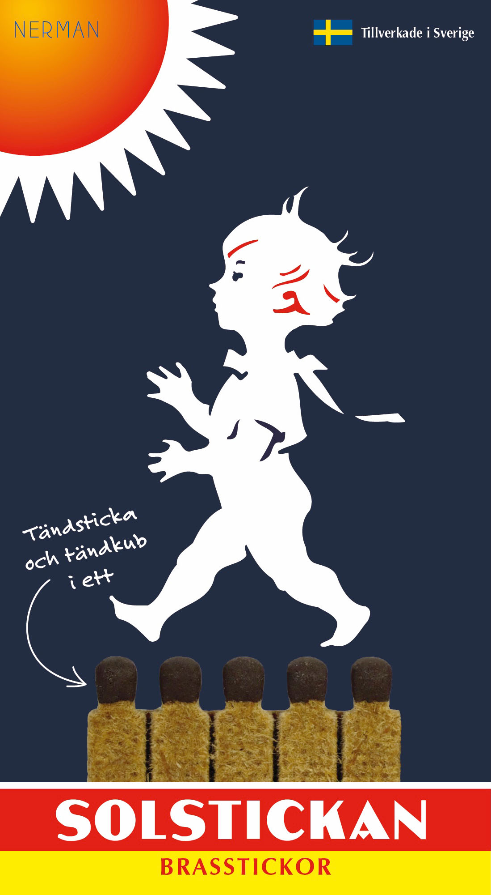
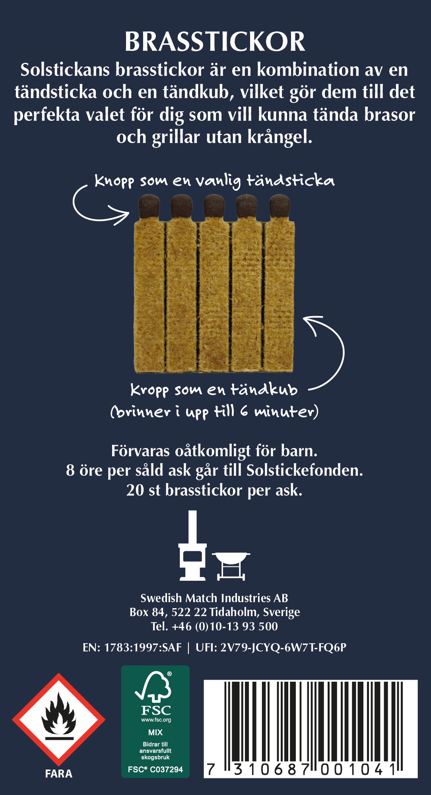
Den färdiga förpackningen, fram och bak. Jag inledde arbetet med att ringa in brasstickans USP, och kom efter en kvalitativ undersökning (dvs, jag frågade mina kollegor ifall de använder produkten och vad deras tankar kring den var) fram till det som gör brasstickan speciell är att den erbjuder en allt-i-ett-lösning (använder du tändkuber behöver du tända dem med något, använder du tändstickor behöver du nåt att sätta eld på). Nästa frågeställning var hur jag kunde formulera detta på asken, och jag kom så småningom fram till att en tagline på framsidan var den bästa lösningen.
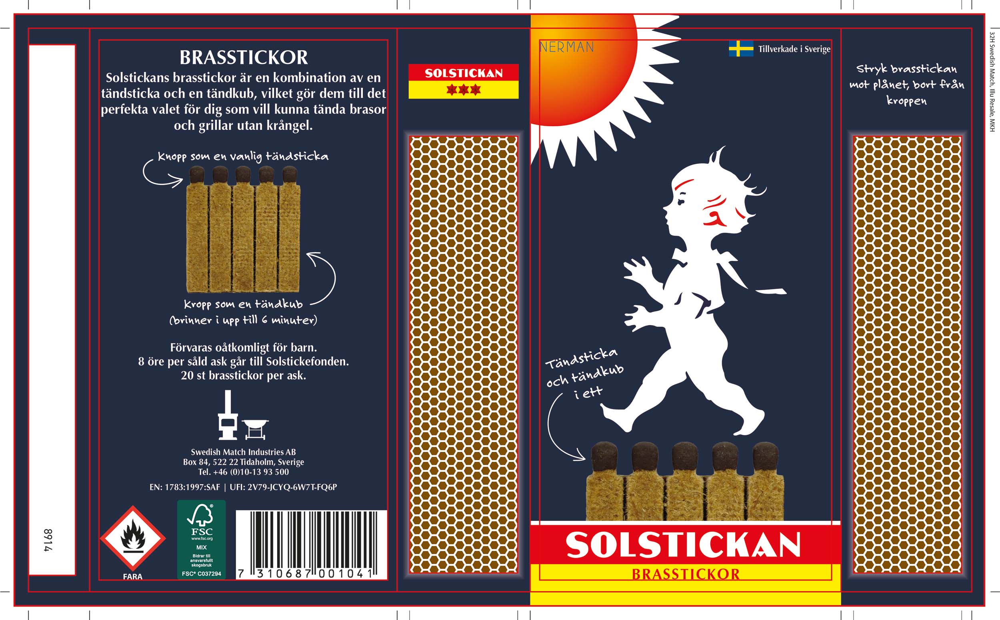
Den färdiga förpackningen som tryckfärdig fil. En central fråga under arbetets gång var vad som borde framhävas på asken, bortsett från produktens användningsområde. Till slut landade vi i att antal brasstickor och brinntid, som tidigare framhävts, troligtvis inte var det som skulle få konsumenterna att köpa produkten; istället valde vi att lyfta det faktum att produkten är tillverkad i Sverige.
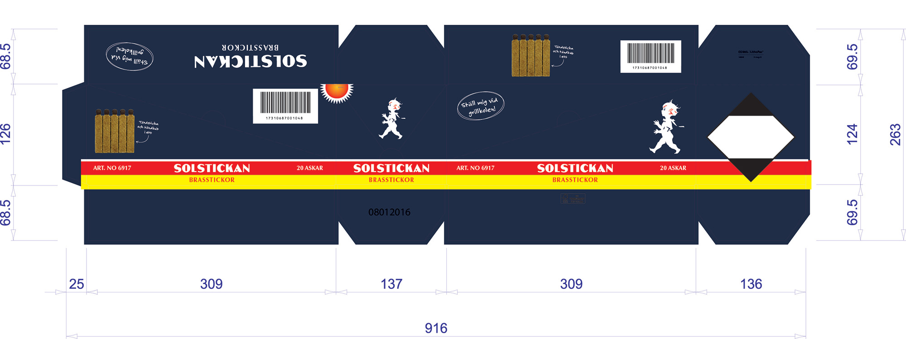
Skeppningskartong. Ett vanligt problem med den här produkten är att den i butiker placeras vid tändstickorna istället för vid brasprodukterna, därav “ställ mig vid grillkolen!”.
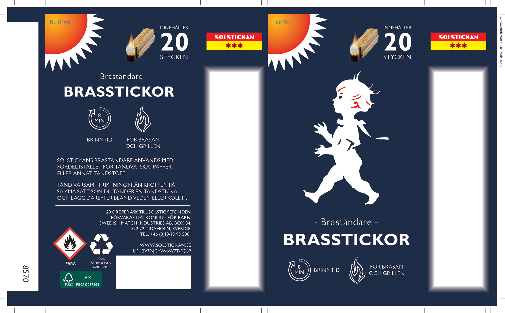
Den usprungliga förpackningen.
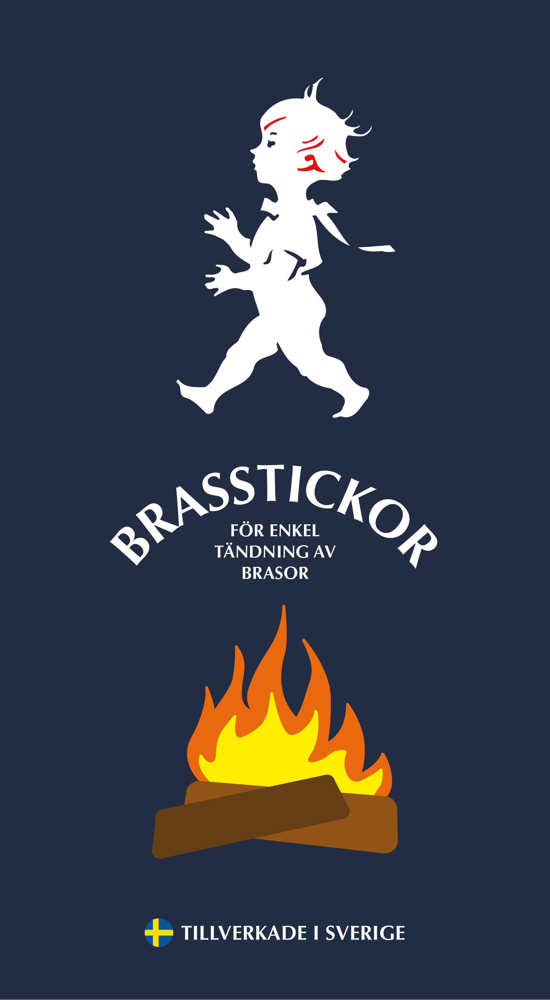
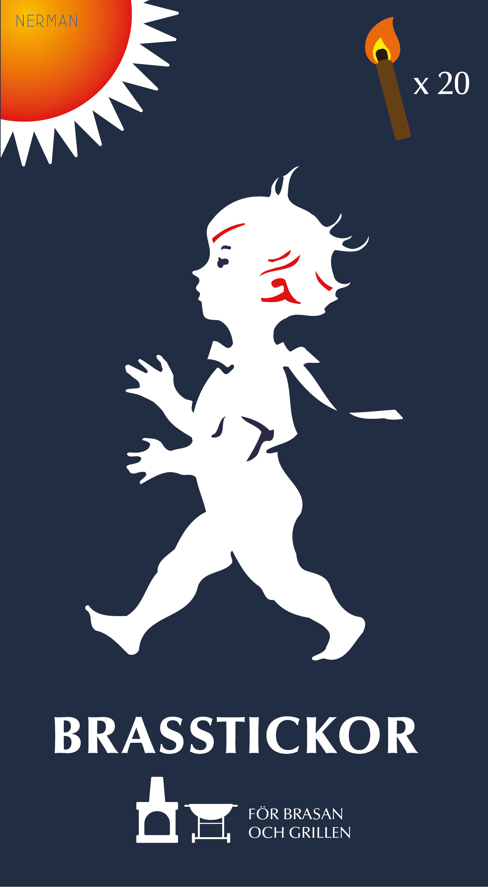
Skisser. I det här stadiet hade jag inte med de röda och gula banden längst ner på förpackningen som är typiska för Solstickan, utan vi valde senare att lägga till dem för att framhäva varumärket ännu mer.
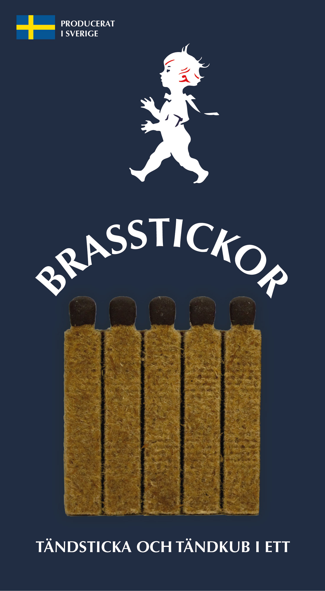
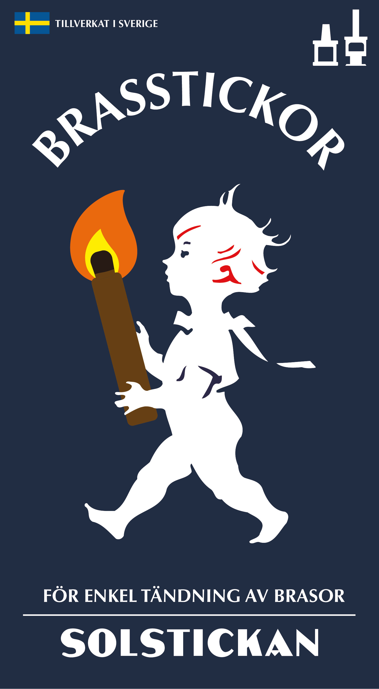
Skisser, den ena med större fokus på produkten än på varumärket. Vi kom senare fram till att solstickepojken borde utgöra det största visuella elementet på förpackningen.
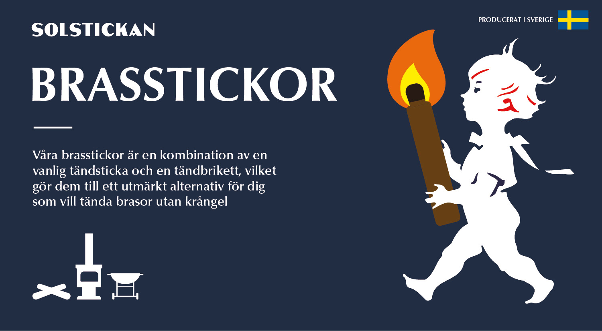
Skiss med fokus på att informera. Jag insåg snabbt att ingen konsument lär stanna upp och läsa så här mycket text.
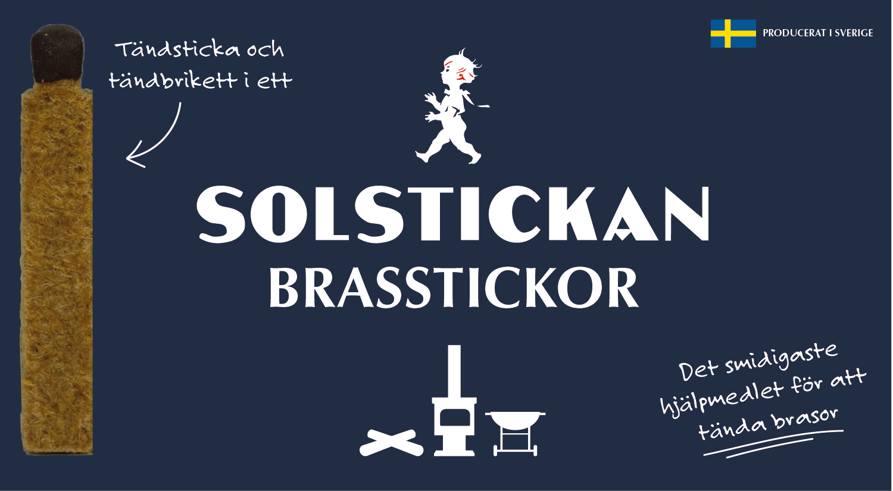
En mer koncis variant av ovan, men med två taglines blir det svårt att veta vart man ska rikta blicken.
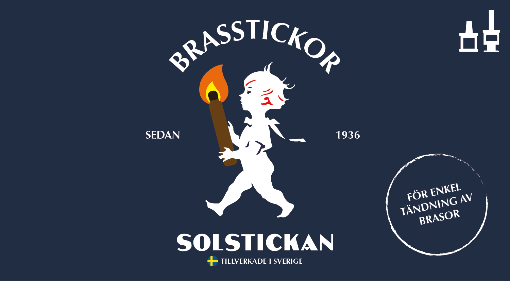
Skiss med fokus på att vara estetiskt tilltalande. Största anledningen till att vi till slut valde att köra på en stående design var för att den tidigare förpackningen var utformad så, och därmed var skeppningskartonger och produktionsprocesser anpassade för detta.
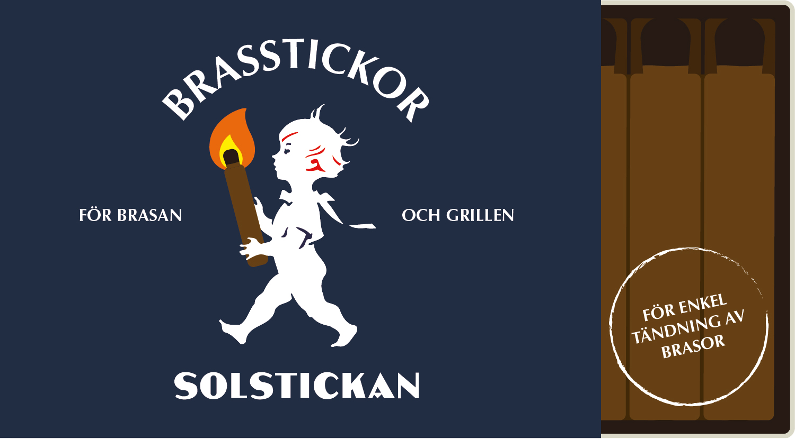
Personligen gillar jag denna variant, men tror inte den hade funkat särskilt bra som en förpackning.